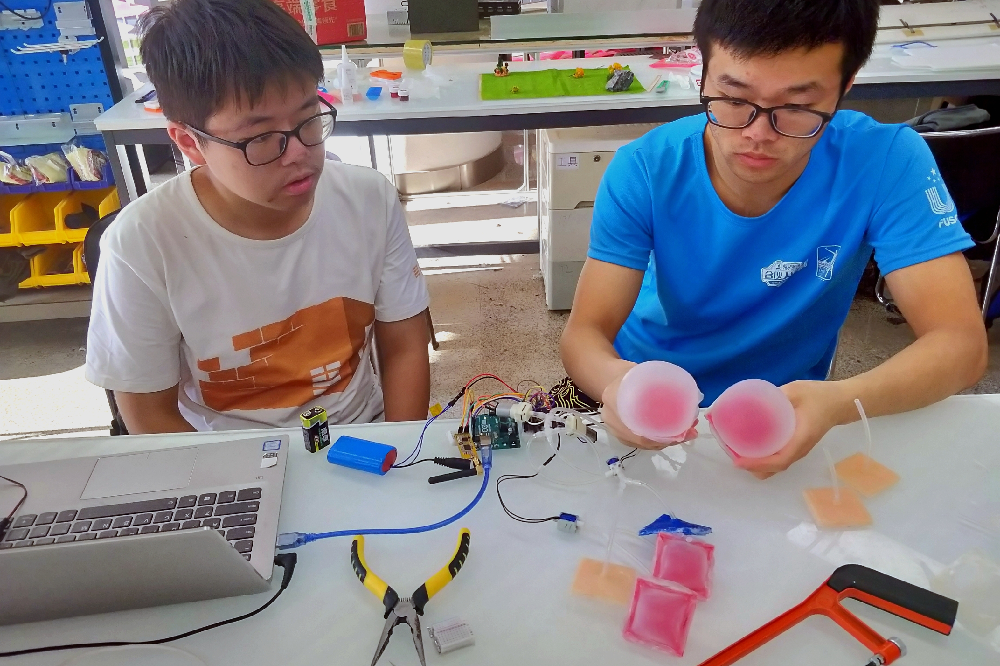

Overseas visit: Percipated in summer programs at Nagasaki University, Japan, and Oklahoma University, US.

Started since 2019, the technology science innovation and practice camp is a special course held and sponsored by School of Aerospace Engineering, Tsinghua University, and it lasts 4~6 weeks in each summer.
In this course for second and third year undergraduates, the students are devided into several teams of 3~4 people, and each group aims to develop an engineering prototype like mobile robot or drone. These subjects are chosen from the latest research papers, which are multi-disciplinary, functional, and fun. This course provides the chance to apply the knowledge learned from classes like mechanical and electrical technology, and learn new skills like 3D printing and computer vision from the practice. The students can train their self-learning and teamwork ability, and experience a complete procedure of brainstorming, designing, manufacturing, coding, and testing.
In 2019, 14 students participated the soft robotic project, and developed 5 different soft robots. They applied SMA, pneumatic, and tendon-driven actuations for their crawling or tumbling robots, developed simplified mathmatical models, and tested the motion performance. The 2020 camp was held online at the most difficult time of lockdown, and the students managed to do the tasks in their own homes. In 2021, 17 participants developed drug delivery robots and swarm robots with more funding.

At the end of the camps, the teams will present their work, and prepare for future academic contests representing our school.


I joined the teaching group as an assistant in 2019 and 2021, to help set up tasks, instruct technical knowledge, and manage the teams, etc. I thank all of the students, and thank Professor Hongping Zhao and Shuyuan Du for their enthusiastic support.

Overseas visit: Percipated in summer programs at Nagasaki University, Japan, and Oklahoma University, US.

Teaching assistance: Led and managed 8 teams of 31 undergraduates in total to develop soft and intelligent robots.

Academic contests: National soft robotic design contest.

Physical activity: Managed to lose weight of 20 kg for health, and summited the Haba snow mountain of 5588 m for aspiration.